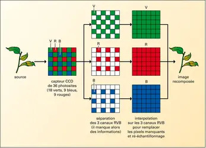

Une fois que le capteur a capturé la lumière et l'a convertie en données binaires, le processeur de l'appareil (ou un logiciel) doit intervenir pour rendre l'image lisible et esthétique. C'est ce qu'on appelle le traitement d'image.
Dès que vous appuyez sur le bouton, l'appareil photo ou le smartphone effectue instantanément plusieurs opérations complexes :
Après la capture, on peut modifier l'image manuellement à l'aide de logiciels. Voici les traitements les plus courants :
Le choix du format de fichier influence grandement les possibilités de traitement ultérieur :
Une image numérique n'est au final qu'une immense suite de 0 et de 1. Pour arriver à ce résultat, l'ordinateur doit traduire chaque couleur en langage binaire.
Voici l'ordre logique pour transformer une couleur réelle en donnée informatique :
C'est le standard utilisé pour la majorité de nos écrans et photos :
Quelques exemples de "traduction" pour comprendre le lien entre couleur et binaire :